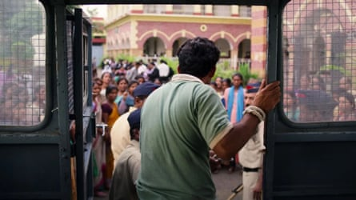
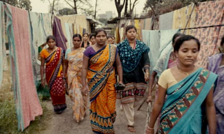
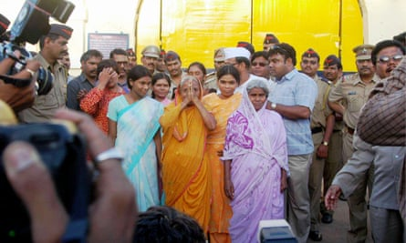

T he doors and windows of all the tin shacks in Kasturba Nagar slum in Nagpur, were tightly shut, the streets eerily empty. An overcast sky threatened rain. Ashu Saxena, a social activist, was going from house to house, urging people to come out and talk to her. But the doors remained closed.
Three days before, on 13 August 2004, about 200 women from the slum had killed a man on the marble floor of a district court room in the central Indian city. As police and court officials fled, witnesses say that women across Kasturba Nagar who had marched to the court carrying stones, kitchen knives and chilli powder, took part in the killing of Akku Yadav, a 32-year-old gangster. He was stabbed about 70 times and his ears and penis sliced off.
For years, Indian police claimed the killing was the result of a criminal feud but a new documentary series on the murder has India looking more closely at a dramatic episode of vigilante justice that few remember, but which touched on important themes of caste, violence against women and public corruption.
Saxena recalls how difficult it was to get people to talk to the fact-finding mission set up by civil society organisations in the days after Yadav’s death, as they knocked on doors and assured people that no one was in danger of arrest. “I could hear women sobbing inside,” says Saxena.
Yadav, born Bharat Kalicharan, was a petty thief who had graduated to bigger crimes, terrorising Kasturba Nagar, on the edge of the city of Nagpur, in Maharashtra, from the 1990s until his death.
An extortionist, killer and rapist, he dragged women out of their houses and assaulted or raped them. He barged into homes and gang-raped women with his associates. He didn’t spare children or pregnant women.
A scene from Indian Predator: Murder in a Courtroom.Photograph: Courtesy of Netflix
Activist Bhaganbai Meshram recalls one brutal attack on a friend’s pregnant daughter.
“That night, Akku and his associates gang-raped the seven-month pregnant woman. She [the woman’s mother] came to me carrying her unconscious daughter and asked for help. I took her daughter to the hospital and admitted her. Later, I tried to convince the mother to make a police report. I advised her to act to prevent other women from suffering the same fate. But she was terrified and refused.”
When one woman did stand up and made a complaint to police, Yadav threatened her with acid, finally convincing others in the slum that enough was enough. With an angry mob forming outside his door, police took Yadav into custody. When people heard he would probably get bail at a hearing in Nagpur district court, there was an outcry.
Women from the slum, and allegedly some men, stabbed him to death in the courtroom as the overwhelmed police couldn’t save him.
In October, Netflix released the documentary series Indian Predator: Murder in a Courtroom . Through interviews with people in Kasturba Nagar, the series shows how Yadav raped and killed women – mainly lower-caste Dalits – with impunity.
The director, Umesh Vinayak Kulkarni, says making the documentary was challenging. Reconstructing the events, from Yadav’s initiation as a criminal to his murder, was complex and riddled with inconsistencies. He couldn’t convince Yadav’s family to speak in front of the camera.
Also, there is the theory that Yadav was murdered by a rival gang using a mob of women as a cover because, as one man said, few could believe women’s “hands that cut the vegetables” could kill.
Gender researcher Cynthia Stephen says there was a reluctance to admit that women from a marginalised community would rebel to deliver a justice the system denied them. “It was a painful lesson, which they [the state] don’t want to publicise too much.”
But a report by the fact-finding team states the murder was “neither the result of caste conflict nor a gang war nor the handiwork of any extremist political organisation”.
A scene from the series, which has been lauded for depicting the stark reality of slum dwellers in India.Photograph: Netflix
For many Indians, the new series is the first they have heard of the case – widely covered at the time in international media. One review commends the documentary for emphasising “the ordinariness of Kasturba Nagar’s people, thereby making it clear that this is not a ‘heroic narrative’”.
Other reviews have praised the avoidance of violence in the re-enactments and for giving voice to survivors. The series has also been lauded for depicting the stark reality of being a slum dweller in India, lacking access to civil liberties many take for granted.
But the dominant reaction from viewers has been shock at the brutality of Yadav’s crimes, which went unpunished by the authorities.
Poorvi Priya, a research associate for the series, says that, for many, the case had faded from memory.
“We came across so many reports during our research,” she says. “I think social media now shapes our collective memory. And because this incident happened before social media, people don’t remember it. It is still referred to in academia when people talk about vigilante justice ,” says Priya.
Nidhi Salian, head of research for the series, suggests the case was overshadowed by the execution of a rapist on death row in Kolkata on 14 August 2004. “There was a huge media buildup to that execution. It is possible that this incident got buried in that frenzy.”
Caste also plays a role in deciding which news gets more attention, says Sowjanya Tamalapakula, assistant professor at the School of Gender Studies, Tata Institute, in Hyderabad. She says rape of Dalit women is seen as part of normative society. While the rape of an upper-caste woman is an aberration.
“There is shock value when the woman is Hindu and of upper caste. The news plays an important role in constructing middle-class and upper-caste women as pure victims. There is this essential [idea of] sexual purity that comes with caste. And these are unconscious processes [of casting lower-class Dalit women as sexually impure] as we are shaped by the society we live in.”
Almost two decades on, survivors are yet to come to terms with the events surrounding Yadav’s death.
Women outside the district court in Nagpur on 18 August 2004. Five women allegedly involved in the lynching of Akku Yadav on 13 August, were released on bail.Photograph: EPA
“There is fear, mistrust and resistance to looking back at those times and reliving those memories. Gaining the trust of Kasturba Nagar’s women was not easy. It took six months to convince them to talk to us,” says Kulkarni.
“Some rape survivors told us they wanted to talk about their experiences but couldn’t because now they have grownup kids, daughters-in-law and sons-in-law,” he adds.
Meena Gajbhiye, 53, lived through Yadav’s reign of terror. She says she always wanted the world to know what the women had endured. “I hope the documentary will start a conversation around the incident, about how no politicians, police or anyone else helped us.
“Even now, when I tell someone I am from Kasturba Nagar, they do a double-take. I tell them we are not killers, and they have no idea what the women tolerated before they took this drastic step.”
In 2014, the court acquitted 18 accused of Yadav’s murder. According to the judge, the eyewitnesses’ testimonies were unreliable, the prosecution failed to corroborate accusations, and there were many lapses in the initial investigation.
The judgment noted that the police did not seize crucial evidence immediately after the crime; and news outlets published pictures of the accused before an identification parade.
Additionally, the autopsy revealed Yadav had alcohol in his system, which implied he was not being treated as a criminal in his police cell. It accused the local police of being in cahoots with Yadav and recommended action against individual officers. It is not clear if any such action was taken.
People from Kasturba Nagar were treated with frosty suspicion in Nagpur after Yadav’s murder, some even lost their jobs as no one wanted to be associated with the slum dwellers.
“They were traumatised financially and emotionally. It is something they have to live with. It’s not over yet,” says Kulkarni.